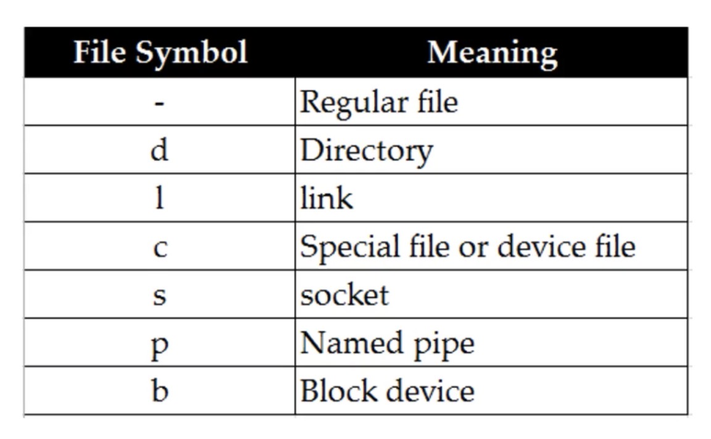
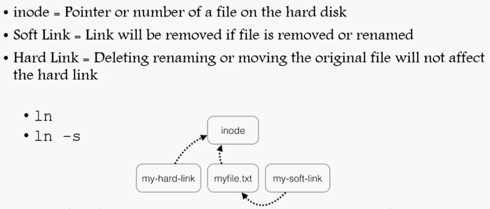

IP command
Cent OS/RHEL 5 or 6 = ifconfig
CentOS/RHEL 7 = ip
CentPS/RHEL 7.5 and up = ifconfig command has been deprecated, you should type: ip addr
To use ifconfig in 7.5 = yum install net-tools
Linux File System
List of directories of Linux file system
/boot, contains file that is used by the boot loader
/root, root user home directory
/dev, system devices(disk, cdrom, speakers, flashdrive)
/etc, configuration files
/bin /user/bin, everyday user command
/sbin /user/sbin, System/filesystem, command
/opt, optional add-on applications(Not part of OS apps) third party applications
/proc, running processes(Only exist in Memory)
/lib -> user/lib, C programming library files needed by commands and apps
/tmp, directory for temporary files
/home, directory for user
/var, system logs
/run, system daemons that start very early to store temporary runtime files like PID files
/mnt, to mount external filesystem
/media, for cdrom mounts
Navigating file system
cd change directory
pwd print working directory
ls list
absolute path begins with a slash ‘/’
relative path begins without /
creating files and directories
touch, cp, vi (files)
mkdir (directories)
ls -l list all the files and directories in alphabetical order
ls -ltr ~ last modified oldest one at top, newest one at bottom
linux file type
Find files and directories
find . -name “jerry” find
locate Kramer

To update locate database run updated
Wildcard
? – represent a single character * - represent zero or many characters
[] – represent a range of characters [1..9] [cd]
\ = (slash) as an escape character
^ = (caret) the beginning of the line
$ = (dollar sign) the end of the line
Touch abc{1..9}-xyz
Soft and hard links

ln -s
ln
ls -li or ls -ltri (inode)
soft links have pointers hard link not